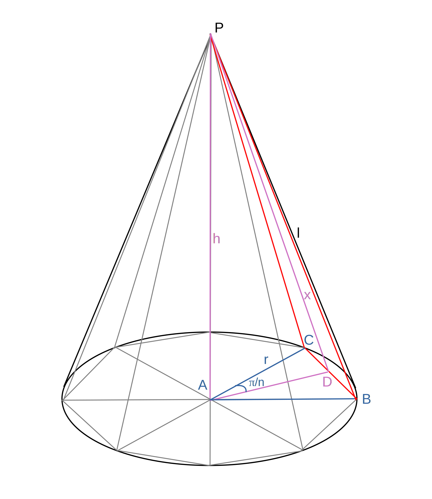
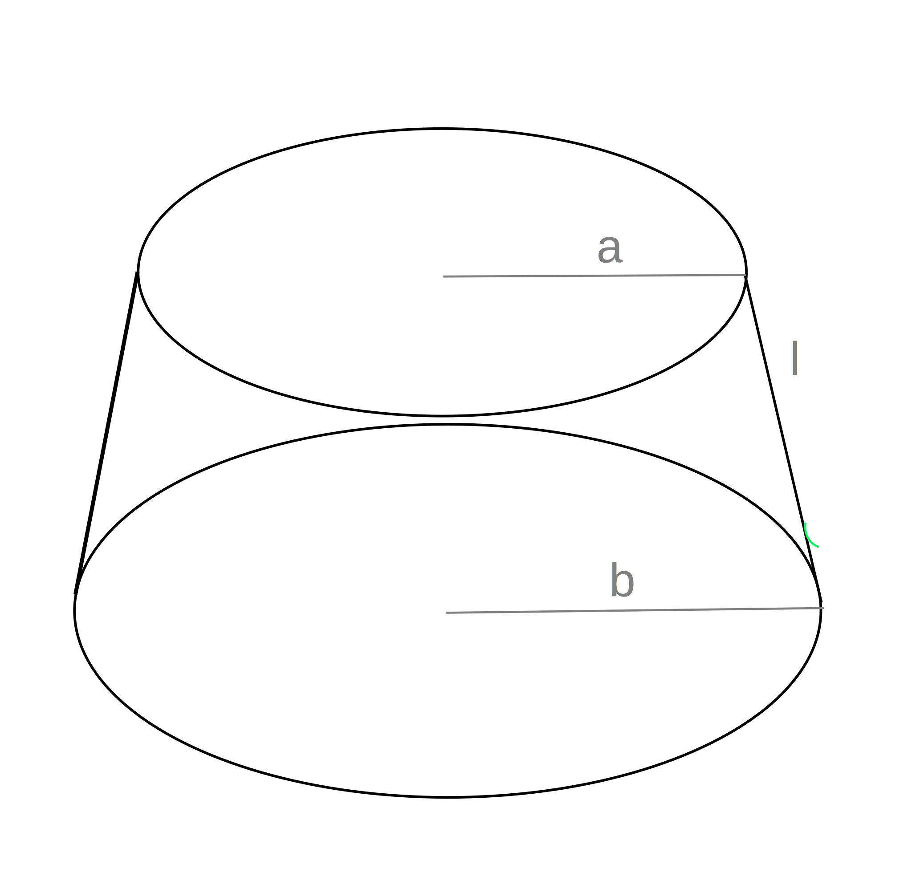
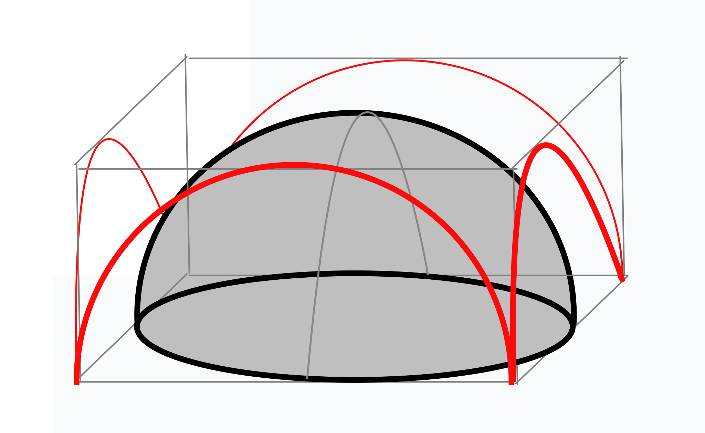
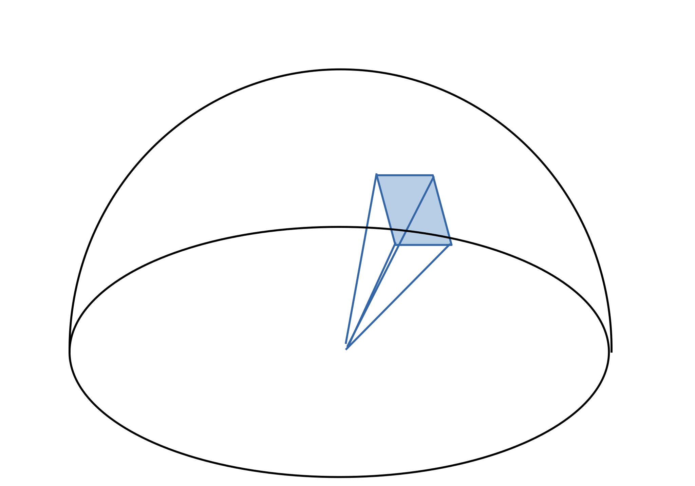
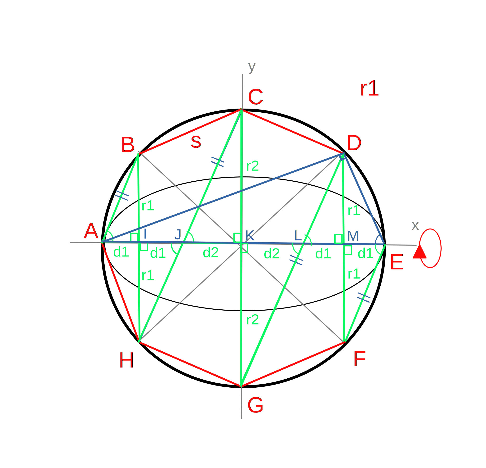
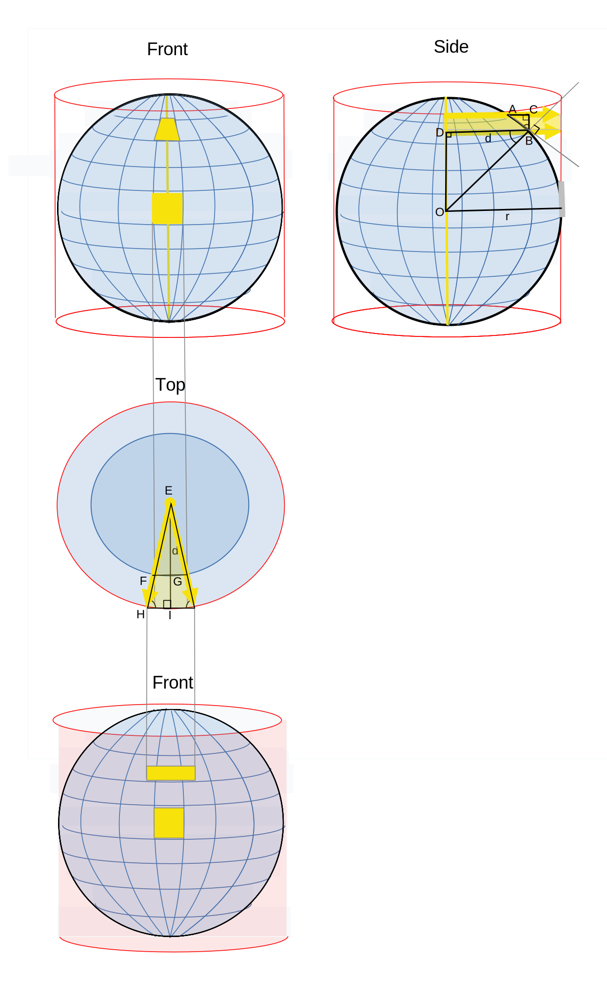
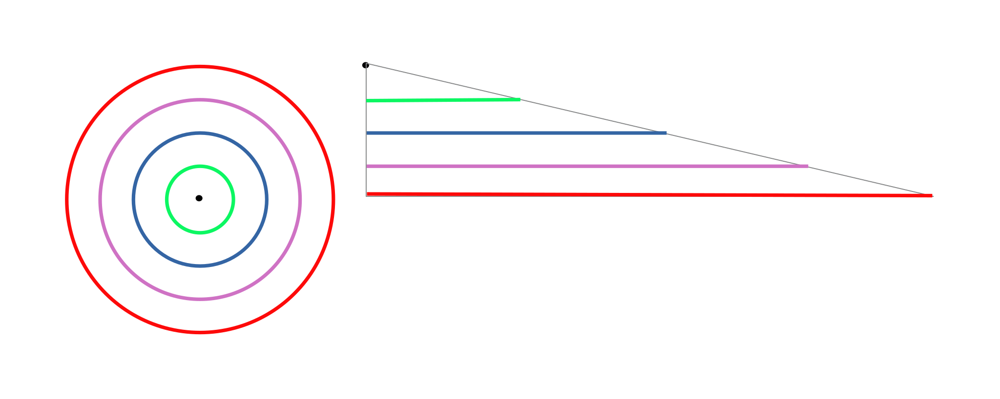
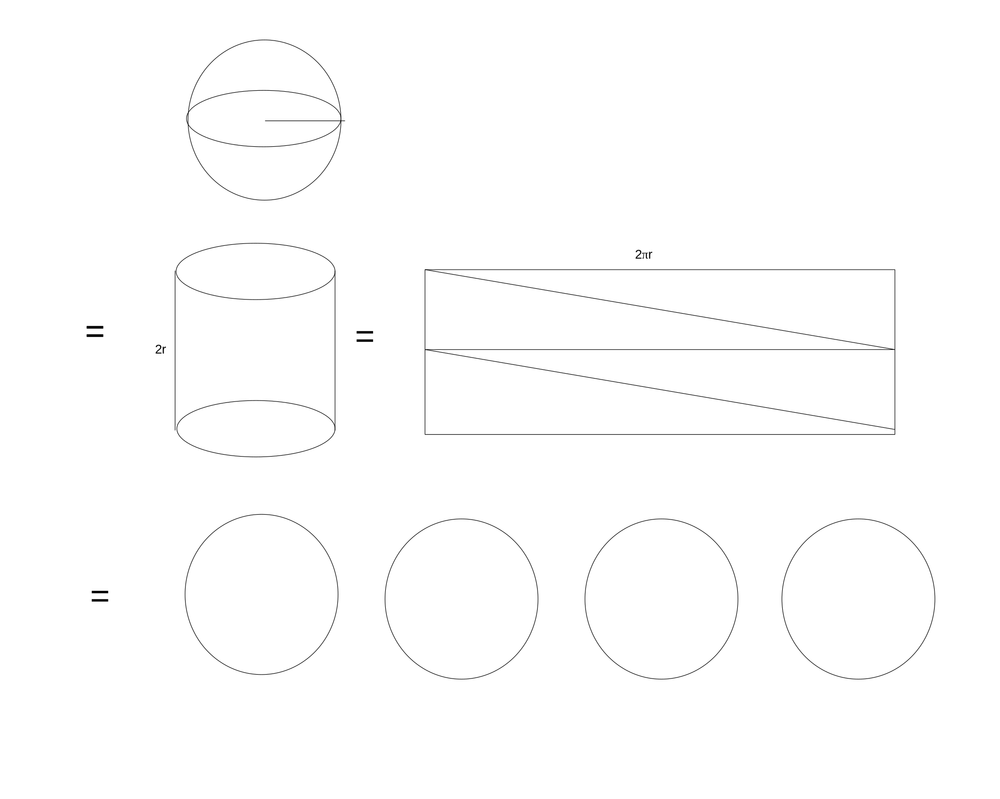
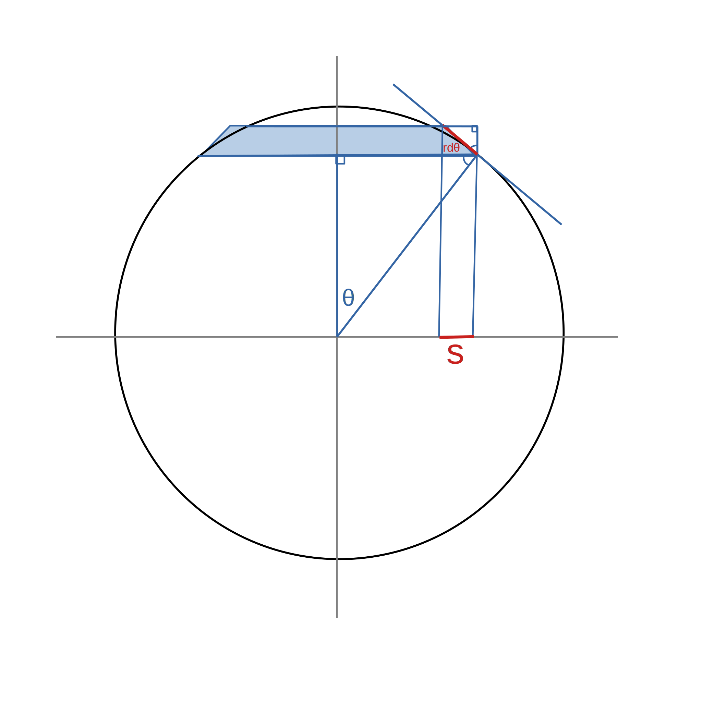

Surface Area
Of Cylindar
= h * 2πr
Of Cone (radius r; slope l)

- Approximate with a n-sided pyramid
- h2 + r2 = l2 (based on △ ABP)
- CD = r sin(π/n)
- AD = r cos(π/n) (based on △ ACD)
- AD2 + x2 = x2 (based on △ ADP)
- area △ BCP = 1/2 BC x
- = 1/2 2 sin(π/n) x
- = x sin(π/n)
- surface area of pyramid = nx r sin(π/n)
- surface area of cone = lim n->∞ nx r sin(π/n)
- = lim n->∞ x n π/n [sin(π)/π/n)]
- = π r lim n->∞ x lim n->π [sin(π)/π/n)]
- = π r * l * 1
- = πrl
Using Calculus
Of Frustrum (Truncated Cone)

Moscow Papyrus Problem 10[1]
What is the surface area of a basket with a mouth of 4 1/2?
Solution
- 1/9 of 9 = 1
- 9 - 1 = 8 (area of circle)
- 1/9 of 8 = 2/3 1/6 1/18
- 8 - 2/3 1/6 1/18 = 7 1/9
- 4 1/2 * 7 1/9 = 32
Interpretation
- = 2d(8/9)(8/9)d (According to the Moscow Papyrus)
- = 2 (8/9)(8/9)d2
- = 2 (8/9)(8/9)(2r)2
- = 2 (2*8/9)(2*8/9)r2
-
- = 2 (256/81) r 2
- ie. π = 256/81
Possible Derivations
Simple

Based on Volume
Archimedes computed the surface area of the sphere based on its volume as follows.[2]
- area of circle = [(8/9)d]2
- volume of cylinder (diameter=d & height=r) = [(8/9)d]2 x r
- volume of hemisphere = 2/3 volume of cylinder (see Volume of Sphere)
- surface area of hemisphere[3]
- = 3/r volume of hemisphere
- Proof:

- volume of hemisphere
- = ∑ pyramids
- = ∑ 1/3 br
- = 1/3 r ∑ b
- = 1/3 r x surface area
- = 3/r x 2/3 x [(8/9)d]2 x r
- = 2/r x (8/9)d(8/9)d x r
- = 2/r x (8/9)d(8/9)2r x r
- = (8/9)d(8/9)2r x 2/r x r
- = (8/9)2d(8/9)r/r x 2r
- = (8/9)2d(8/9) x d
Intuitively[4]

- inscribe a n-sided polygon in the circle
- rotate the polygon around the x-axis
- cut the polygon vertically to form (n/4 - 1) x 2 frustum and 2 cones
- as n->∞ surface area of frustrum and cones -> surface area of sphere
- = lim n->∞ 2 * π(r1 + r2)s + 2 * r1̠s
- = lim n->∓ 2πs(2 r1 + r2)
- note: trianges ABI, JCK and EAD are similar
- ∴ r1/d1 = r2/d2 = AD/s
- ∴ r1 * s = d1 * AD and r2 * s = d2 * AD
- ∴ 2 r1 * s + r2 * s = 2 d1 * AD + d2 * AD
- ∴ s (2 * r1 + r2) = AD (2 d1 + d2)
- ∴ 2 * r1 + r2 = AD (AE/2) / s = (AD * AE)/(2s)
- = lim n->∞ 2πs * (AD * AE)/2s
- = lim n->∞ πs * (AD * 2r)
- = 2πr * lim n->∓ AD
- = 2πr * 2r
- = 4πr2
Equal to Surface Area of Cylindar with Same Diameter and Height[5]

- cover sphere in small rectangles
- project rectanges onto cylindar from points on the vertical axis
- in the top view:
- △ EFG ~ △ EHI
- ∴ HI/FG = r/d
- in the side view:
- AB is tangent to the sphere
- ∴ < ABO = 90°
- < ABD + < DBO = < ABD = 90° = < CBA + < ABD
- ∴ < DBO = < CBD
- ∴ △ BDO ~ △ BCA
- ∴ BC/AB = d/r
- ∴ width of projected rectanges are r/d wider and d/r shorter than corresponding rectange on the surface of the sphere
- ∴ the area of rectanges projected onto the cylindar are the same as the corresponding rectange on the surface of the sphere
- furthermore, note that the surface area of the cylinder is: 2πr * 2r = 4πr2
- finally, note:
- that a 2πr * 2r rectangle can be divided into 4 trianges which have a base of 2πr and a height of r
- each triangle has a area of 1/2 2πr2 = πr2
- each triangle has the same area as a circle with the same radius as the sphere

- ∴ the surface area of the sphere is the same as the area of 4 circles with the same radius

According to Grant Sanderson (3Blue1Brown) [6]

- area of ring
- = 2π r sin(θ) r dθ
- = 2π r2 sin(ι)d(θ)
-
- s / (r dθ) = r cos(θ) r
- ∴ area of shadow
- = 2π r sin(θ) r cos(θ)d(θ)
- = π r2 2sin(θ)cos(θ)d(θ)
- = π r2 sin(2θ)d(θ)
- ∴ area of ring = 2 area of shadow of ring at 2θ
- sum of areas of shadows of rings of hemispere = πr2
- ∴ sum of area of rings of hemisphere = 2πr2
- ∴ sum of area of rings of sphere = 4πr2
Using Calculus
https://www.youtube.com/watch?v=J42wNwCh0Mk
References
[1]Wikipedia contributors. Moscow Mathematical Papyrus. Wikipedia, The Free Encyclopedia. October 28, 2023, 01:22 UTC. Available at: https://en.wikipedia.org/w/index.php?title=Moscow_Mathematical_Papyrus&oldid=1182239454". Accessed March 23, 2024.
[2] Murty, Ram. Archimedes and the Sphere. Available at: https://mast.queensu.ca/~murty/MathHistory-8.pdfAccessed March 24, 2024.
[3]Understanding the Volume of a Sphere Formula. mathematicsonline. Available at:
https://www.youtube.com/watch?v=xuPl_8o_j7k
. Accessed March 23, 2024.
[4]Understanding the Surface Area of A Sphere Formula. Mathematisonline. Available at:
https://www.youtube.com/watch?v=6EzQEdBX_30
. Accessed March 2, 2024.
[5]Sanderson, Grant. But why is a sphere's surface area four times its shadow. 3Blue1Brown. Available at:
https://www.youtube.com/watch?v=GNcFjFmqEc8
. Accessed February 24, 2024.
[6]Sanderson, Grant. But why is a sphere's surface area four times its shadow. 3Blue1Brown. Available at:
https://www.youtube.com/watch?v=GNcFjFmqEc8
. Accessed February 24, 2024.